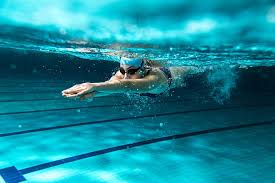

Text
yellow
purple
pink
green
black
white
grey
blue
Background
yellow
purple
pink
green
black
white
grey
Swimming:
Swimming is an excellent full-body workout that improves cardiovascular health and muscle strength. I love the feeling of gliding through the water, which is both calming and invigorating. It's a low-impact exercise, making it ideal for people of all ages and fitness levels. The rhythmic nature of swimming laps can be meditative, helping to clear my mind and reduce stress.
Reading:

Reading transports me to different worlds and allows me to experience diverse perspectives and ideas. It's a mental exercise that expands my vocabulary, improves my focus, and stimulates my imagination. Whether it's fiction, non-fiction, or poetry, each book offers a unique journey. I especially enjoy the quiet and solitude that comes with reading, providing a peaceful escape from the hustle and bustle of daily life.